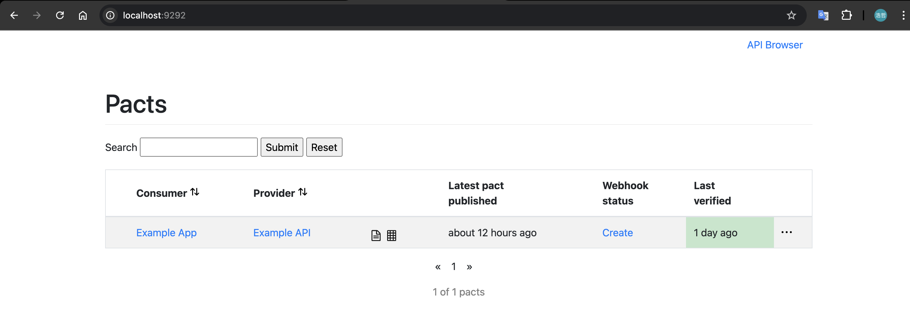
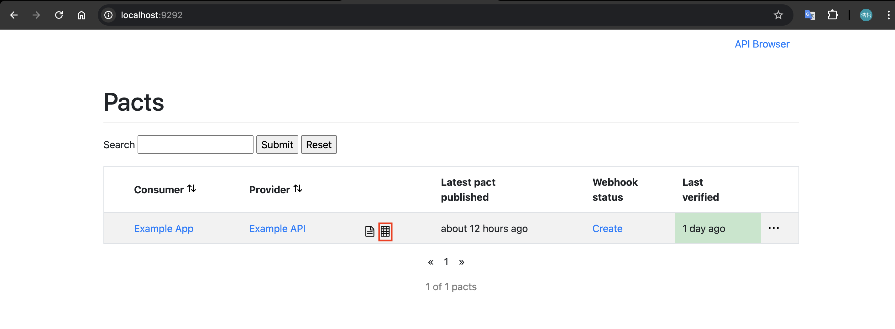
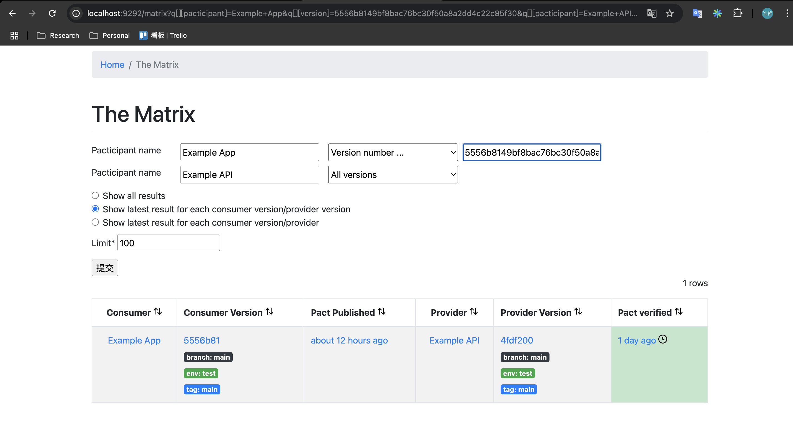
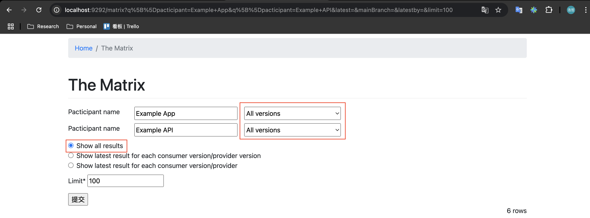
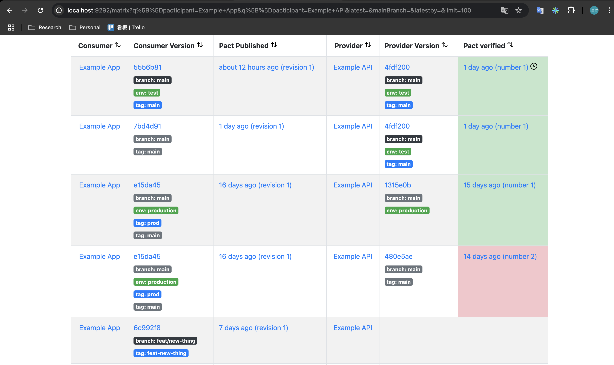
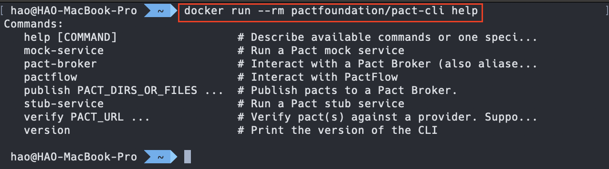
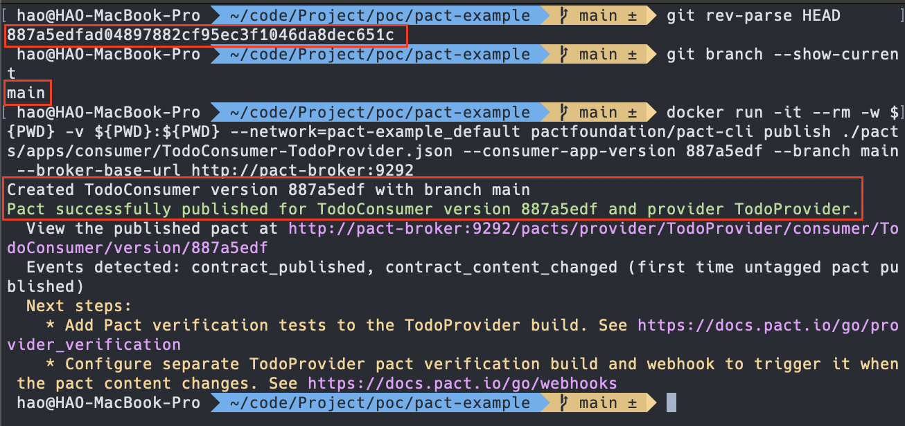
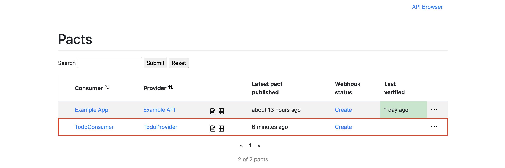
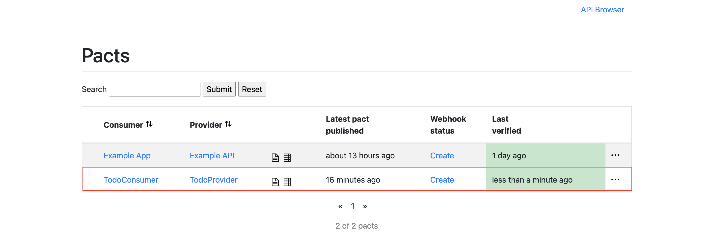
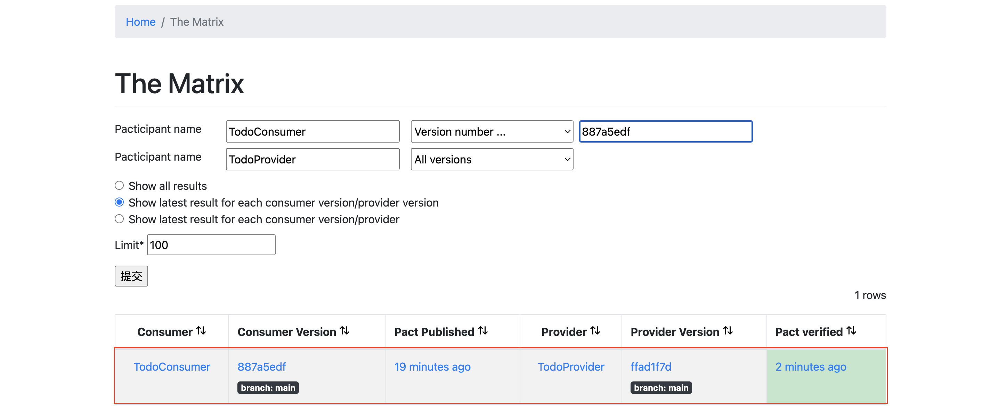

NestJS 結合 Pact Broker 完善契約測試
什麼是 Pact Broker？
契約測試可以用更快、更低的成本來測試服務之間的介面是否有破壞性變更，強化服務之間介面的穩固性。但此測試方式面臨了一些挑戰：
- 契約管理：在微服務架構中，每個服務之間的契約可能數量很多且版本頻繁變動。需要一個集中的平台來儲存、追蹤這些契約檔案，並協助團隊理解每個契約的來源與歷史。
- 驗證結果管理：當 Provider 驗證 Consumer 所提交的契約時，我們需要一個地方來儲存這些驗證結果，讓團隊成員可以清楚知道目前哪個版本的服務與哪個契約已經完成驗證、是否相容。
為了解決上述問題，Pact 團隊打造了 Pact Broker 這個工具。它是一個專門設計來儲存和管理 Pact 契約與驗證結果的服務。透過 Pact Broker，我們可以更有效地管理微服務之間的契約、驗證狀態、版本關係，將其融入 CI/CD 即可打造自動化、高效的契約測試流程。
參與者 (Pacticipants)
參與者 (Pacticipants) 一詞是 Pact 與英文中的參與者 - Participants 合併後產生的單字。在 Pact Broker 中，最基本的單位就是參與契約測試的「服務」，也就是 Consumer 與 Provider，這些服務稱之為 Pacticipants。
補充：根據官方的說法，Pact Broker 的作者很後悔使用 Pacticipants 這個詞 XD
版本 (Versioning)
在 Pact Broker 的架構下，共有三種資源擁有版本，分別是：Consumer 應用程式的版本 、 Provider 應用程式的版本 與 契約檔案的版本 。
契約版本
每一個被發佈到 Pact Broker 的契約都會有一個版本號，這塊是由 Pact Broker 自動處理的，開發人員並不需要針對契約設定版本。
graph TD
C0["Consumer"]
subgraph Pact broker
P0["Contract (version:abc)"]
end
C0 --> P0
Consumer 應用程式的版本
每當一份契約被發佈到 Pact Broker 時，它會跟 Consumer 的名稱 、 Consumer 應用程式的版本 與 Provider 的名稱 產生關聯。其中，Consumer 的名稱與 Provider 的名稱會在撰寫契約測試時指定，版本的部分則是 Consumer 在發佈契約時指定的版本號，這個版本號必須是唯一的。這裡值得一提的是 Pact Broker 會針對 Consumer 發佈的契約進行雜湊比對，如果發佈的契約並沒有任何異動，則會將 Consumer 應用程式的版本與已經存在的契約建立關聯。
graph TD
subgraph Consumer
C0["Consumer v0.0.0"]
C1["Consumer v0.0.1"]
C2["Consumer v0.0.2"]
end
subgraph Contracts
P1["Contract A (hash: abc123)"]
P2["Contract B (hash: def456)"]
end
C0 --> P1
C1 --> P1
C2 --> P2
讓多個 Consumer 應用程式版本指向同一個版本的契約不僅可以減少重複的內容，還可以避免重複驗證的情形，舉例來說，Consumer 版本為 v0.0.0 與 v0.0.1 時，並沒有改變契約的內容，那麼假設 Provider 已經針對 v0.0.0 發佈的契約進行驗證且通過，v0.0.1 也會視為驗證通過。
注意：為了讓檢查重複契約的機制可以順利運作，在撰寫測試的時候，應該要 避免隨機產生資料的行為 ，因為如果有隨機產生的資料，進行雜湊的時候一定會不同，就會導致明明沒有改變契約內容卻因隨機資料而判定為契約有異動的情況。
Provider 應用程式的版本
Provider 與 Consumer 一樣需要定義應用程式版本，該版本會跟 Consumer 發佈的契約產生關聯，每當 Provider 發佈新版本時，需要針對關聯的契約進行驗證，確保 Provider 的異動可以通過契約測試。
graph TD
subgraph Consumer
C0["Consumer v0.0.0"]
end
subgraph Contracts
CT1["Contract A (hash: abc123)"]
end
subgraph Provider
P0["Provider v0.0.0"]
P1["Provider v0.0.1"]
end
C0 --> CT1
CT1 -- ❌ --- P0
CT1 -- ✅ --- P1
從上方概念圖可以看出，Consumer 版本 v0.0.0 產生的契約在 Provider 版本 v0.0.0 時驗證失敗，後來 Provider 釋出 v0.0.1 重新進行驗證就通過了，這裡可以看出是 Provider 在 v0.0.0 時有問題，所以釋出 v0.0.1 進行修正。
Consumer 與 Provider 版本策略
為了發揮契約測試的最大效用，會建議不論是開發功能的 feature/* 分支、準備部署到 Staging 環境的 release/* 分支又或是正式版的 main 分支都執行契約測試，這樣的好處是可以確保在各個階段都能驗證介面是否符合契約內容，及早發現問題。但也代表 Consumer 與 Provider 在版本策略上需要做出改變。
在過去，版本的定義時間點可能會發生在部署到某個環境之前，這就表示開發功能的 feature/* 分支 並不會有一個定義好的版本 ，那針對需要給定 Consumer 應用程式版本的 Pact Broker 來說就不符合規則，所以要改變的策略就是 預定義版本。根據 Pact 官方建議，可以在版本上添加 Git SHA 這類唯一且可識別版本的資訊，確保版本號一定不會有重複且能夠做到預定義版本。下圖是使用 Git Graph 繪製出的預定義版本情境，可以看到除了 dev 分支本身的 commit 有對應的版本外，feature/a 這個分支上也有定義版本：
%%{init: { 'gitGraph': { 'mainBranchName': 'dev' } }}%%
gitGraph
commit id: "4fc667fb" tag:"v0.0.1-4fc667fb"
commit id: "2eed1c17" tag:"v0.0.1-2eed1c17"
branch feature/a
checkout feature/a
commit
commit id: "563c6421" tag:"v0.0.1-563c6421"
commit
commit
commit
commit id: "c517b5d3" tag:"v0.0.1-c517b5d3"
矩陣 (Matrix)
Matrix 是 Pact Broker 的核心功能，它是一張 Consumer 發佈契約與 Provider 驗證結果的記錄表，從這張表可以看出哪些 Consumer 版本發佈的契約在哪個 Provider 版本下是通過驗證的，進而得知 Consumer 版本與 Provider 版本之間的相容性。
下方是一張範例表，從該表可以看出，Banana 這個 Provider 在釋出 1.1.0 的時候去驗證 Apple 1.0.0 發佈的契約，驗證結果為不通過，就表示 Banana 1.1.0 這個版本 不相容 於 Apple 1.0.0，所以後來 Banana 釋出了 1.1.1 進行修復，從驗證結果來看是有正確修復的，就表示 Banana 1.1.1 相容於 Apple 1.0.0，而最後一筆可以看出，Apple 釋出了 1.1.0 也相容於 Banana 1.1.1 版本：
| Consumer | Consumer Version | Provider | Provider Version | Verification Result |
|---|---|---|---|---|
| Apple | 1.0.0 | Banana | 1.0.0 | ✅ |
| Apple | 1.0.0 | Banana | 1.1.0 | ❌ |
| Apple | 1.0.0 | Banana | 1.1.1 | ✅ |
| Apple | 1.1.0 | Banana | 1.1.1 | ✅ |
補充：Pact Broker 有提供十分強大的 Matrix UI 讓 Pacticipant 的開發者可以清楚知道上述的關係，後續會再做進一步的說明。
架設 Pact Broker
Pact Broker 預設使用 Postgres 做為儲存資料的媒介。我們可以透過 Docker Compose 同時啟動 Postgres 與 Pact Broker。下方是 Docker Compose 的 YAML 範例：
1 | version: '3' |
在 postgres 設置了三個環境變數：
POSTGRES_PASSWORD：用來設置 系統管理員(Superuser) 的密碼。POSTGRES_USER：用來設置 Superuser 的名稱。POSTGRES_DB：用來設置預設資料庫的名稱。
而在 pact-broker 的部分設置了四個環境變數：
PACT_BROKER_DATABASE_USERNAME：Pact Broker 存取資料庫的使用者名稱。PACT_BROKER_DATABASE_PASSWORD：Pact Broker 存取資料庫的使用者密碼。PACT_BROKER_DATABASE_HOST：Pact Broker 存取的資料庫 Host 位址。PACT_BROKER_DATABASE_NAME：Pact Broker 要存取的資料庫名稱。
透過下方指令執行 Docker Compose 並架設 Pact Broker 與 Postgres：
1 | $ docker compose up -d |
初探 Pact Broker UI
架設完 Pact Broker 後，打開瀏覽器存取 http://localhost:9292/ 會看到下方畫面：

畫面中呈現了 Consumer 為「Example App」與 Provider 為「Example API」的組合，並呈現最後一次的驗證結果，可以看到上面寫「1 day ago」且背景色為綠色，表示最後一次驗證是發生在一天前且驗證通過。
畫面上可以看到有一個表格的圖案：

點擊後會顯示這個 Consumer、Provider 組合的 Matrix，預設情況下會顯示剛剛首頁呈現的最新一筆的驗證結果：

透過畫面上方的查詢表單可以查到這個 Consumer、Provider 組合的所有版本、驗證結果的 Matrix：


從畫面中可以看到 Consumer 在版本為 6c992f8 的時候，Provider 並沒有執行驗證，而是到了 Consumer 發佈 e15da45 的兩天後，Provider 才使用 480e5ae 這個版本執行驗證，不過很可惜這邊出了問題所以驗證失敗，所以後續 Provider 使用 1315e0b 進行驗證並且結果是通過的。
Pact CLI
Pact 官方有推出 CLI 讓開發者可以透過其部署、檢索契約等操作。除了獨立安裝檔外，還有推出 Docker Image 讓開發者可以更輕易地使用。透過下方指令從 DockerHub 進行下載：
1 | $ docker pull pactfoundation/pact-cli:latest |
下載完畢後，可以透過下方指令呼叫幫助清單：
1 | $ docker run --rm pactfoundation/pact-cli help |

部署契約
延續「在 NestJS 使用 Pact 實現契約測試」文章中的測試，將這份契約透過 Pact CLI 發佈到 Pact Broker 上。
注意：請先將契約檔案產生出來。
Pact CLI 發佈契約會使用 publish 指令，格式如下：
1 | $ docker run -it --rm -w ${PWD} -v ${PWD}:${PWD} --network=<PACT_BROKER_DOCKER_NETWORK> pactfoundation/pact-cli publish <CONTRACT_FILE_PATH> --consumer-app-version <GIT_SHA> --branch <GIT_BRANCH> --broker-base-url <PACT_BROKER_URL> |
注意：因為是使用 Docker 的方式來操作 Pact CLI，所以需要指定 Workspace 與 Volume，確保可以正確讀到契約檔案。
從上方 publish 指令可以看到有許多參數，這裡一一解釋：
<CONTRACT_FILE_PATH>：契約檔案的位置。--consumer-app-version：Consumer 發佈契約當下的應用程式版本，上方範例使用<GIT_SHA>作為佔位符，實際情況可以帶入該 Commit 的 Git SHA 值。--branch：Consumer 發佈契約當下的分支。--broker-base-url：Pact Broker 的 URL。
下方是實際執行的畫面，可以看到執行完以後會顯示成功的訊息：

進入 Pact Broker UI 看一下發佈的契約，可以看到有顯示出來且還沒有任何驗證結果：

整合契約驗證
延續「在 NestJS 使用 Pact 實現契約測試」文章中的 Provider 測試，調整成驗證完畢就將驗證結果發佈至 Pact Broker。這邊需要調整 PactProviderModule 的相關設定，下方是範例程式碼：
1 | // ... |
可以看到除了刪除 pactUrls 外，還新增了以下幾個設定：
pactBrokerUrl：Pact Broker 的 URL。provider：Provider 的名稱。providerVersion：Provider 的版本，建議帶入驗證當下的 Git SHA。providerVersionBranch：驗證當下 Provider 所在的分支。publishVerificationResult：發佈驗證結果至 Pact Broker。consumerVersionSelectors：決定 Provider 要抓取哪些 Consumer 發佈的契約，以範例來說，設置{ mainBranch: true }就表示會抓取每個 Consumer 於main分支發佈的契約。
補充：針對 Consumer Version Selector 可以參考 官方文件 的說明。
執行驗證後，可以在 Pact Broker 看到剛剛驗證通過的結果：

點擊契約圖示可以看到更詳細的驗證結果資訊：

結論
透過本文的介紹，我們理解了 Pact Broker 在契約測試中是一個重要角色。它有效解決契約管理與驗證結果追蹤的難題，透過清晰的版本控管機制、雜湊比對避免重複驗證，以及整合 Matrix UI 清楚呈現服務間相容性的情況，使團隊更易於掌握服務間介面的變化及潛在風險。此外，也示範了如何透過 Docker Compose 快速部署 Pact Broker，並以 Pact CLI 和 NestJS 程式範例說明如何將契約測試融入 CI/CD 流程。
善用 Pact Broker，不僅能有效降低微服務系統在開發、測試、部署時的溝通成本，更能提升整個團隊在協作時的信心與效率。期望透過這篇教學文章，能協助大家迅速建立穩健且高度自動化的契約測試流程，進而達到更高品質的軟體交付。